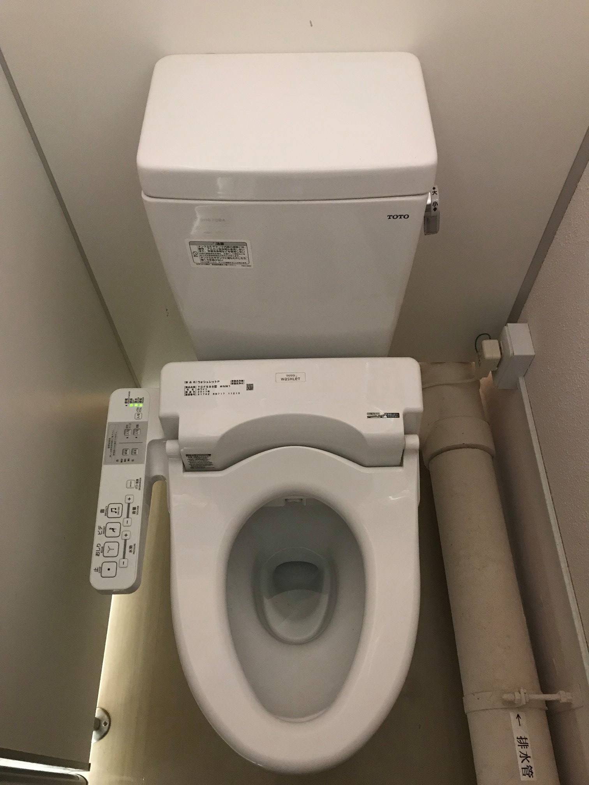
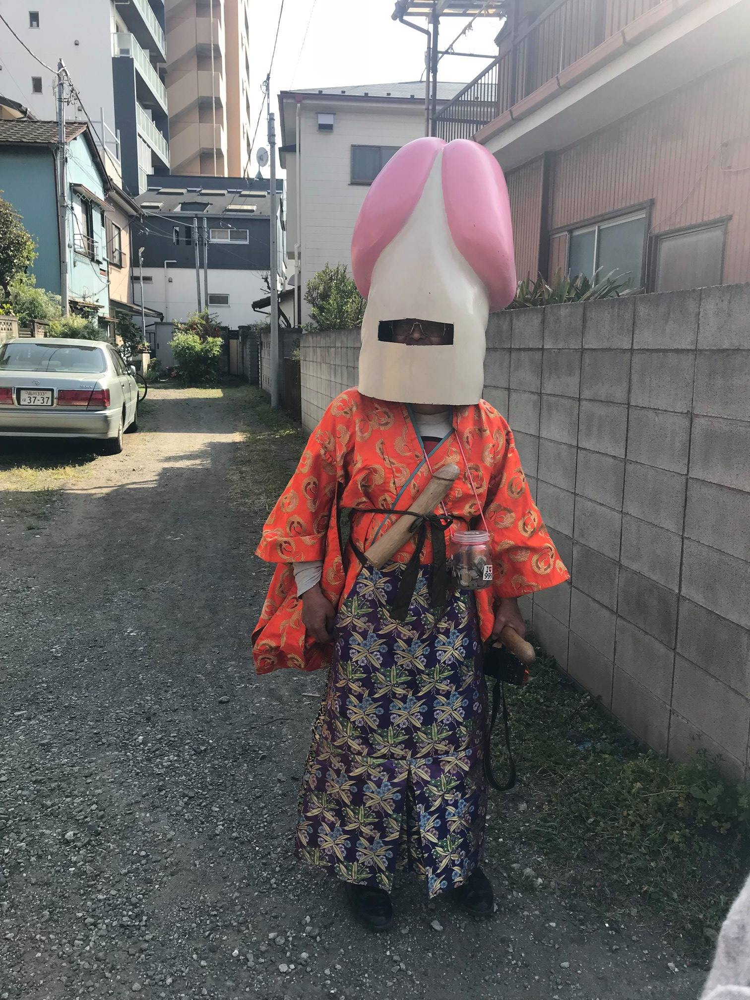

Japonsko - Tokio
Jak vypadá život v hlavním městě v mnoha ohledech nejvyspělejší země světa.
Hned po příletu na tokijské letiště jsem si všiml, že jsem se ocitl v trochu jiné zemi. Kromě toho, že ceny začaly až nápadně připomínat drahotu, se také výrazně změnila atmosféra. Po 9 měsících v zemích, kde jsem si musel kupovat vodu v pet lahvích, jsem v mnoha ohledech nejvyspělejší zemi světa. Zatímco na Filipínách mi spolucestující v pokresleném autobuse připomínali většinou skupinu hippies cestující na novodobý Woodstock, na tokijském letišti Narita jsem potkával jen vzorně upravené muže (businessmany v černém saku, se stříbrnými hodinkami a vyleštěnými botami.
Z centra města do mého ubytování jsem se pár kilometrů prošel. Všude je ohromné ticho. Potkávám jen lidi v důchodovém věku. Všichni vypadají nesmírně spokojeně, všichni se usmívají. V každém obchodě, v autobuse, kdekoliv, jakmile se s někým bavím, vždy mám pocit, jakoby měl člověk upřímnou radost, že se mnou mluví. Japonci mají ze všech zemí nejvyšší průměrnou délku života, ženy se dožívají v průměru 87 let. To je třeba o 15 let více než v mé minulé destinaci, na Filipínách. Tahle atmosféra na to musí mít vliv.
Moje ubytování na první noc v Tokiu bylo krásně minimalistické, jen deka a tatami.
Druhý den za mnou přiletěla 睿. Předchozí dva měsíce mi den co den psala, že nemůže uvěřit tomu, že se podívá do Japonska. Kromě toho, že měla sama dlouhý seznam míst, které chce navštívit, byla také velvyslankyní svých 31 čínských kamarádek, které jí daly kolem 100 tis. Kč a seznam, co chtějí koupit, a ona pak jeden celý den věnovala jen nákupům a přivezla jim jeden celý kufr všech možných parfémů, rtěnek, krémů a podobných věcí.
Tokijské metro. Pravděpodobně nejsložitější metro na světě, ale asi to jinak nejde, v Tokiu a okolí žije 40 mil. lidí. Oproti Evropě zde neplatí, že mladší nechávají sednout starší. Jednou jsem to udělal a paní nevypadala nadšeně. Pak jsem se dozvěděl, že tady to spíše lidi berou tak, že si o nich myslíte, že jsou už tak staří, že nemohou ani stát, takže když chce přesto někomu uvolnit místo, musíte jít hned ke dveřím a dělat jakože brzy budete vystupovat a že jste rozhodně nechtěli nikomu pomoci.
Obsluha metra. Všichni japonští zaměstnanci v dopravě vždy chodí v uniformě a mají bílé rukavičky. I taxikáři mají sako, bílé rukavice a auto, které připomíná Mercedes (jiné taxíky snad ani v Japonsku nejsou.
Co všechno se dá v tokijském metru najít. Třeba fotografie z Prahy.
Japonsko žije různými animovanými postavičkami a taky komixy. Hned první kroky 睿 tedy vedly do velkého komixového domu, v sedmi patrech jsou všude jen komiksy. Většinu zákazníků tvoří mladé dívky, ale najdete tady i starší businessmany v luxusních oblecích, kteří si s dětskou radostí prohlíží zadní strany zabalených komixů.
Všude v Japonsku jsou také automaty na kapsule, ve kterých si můžete koupit vaši oblíbenou animovanou postavičku.
Automaty jsou ostatně v Japonsku všude, je jich v Japonsku kolem pěti milionů a dá se v nich koupit všechno od živých krabů (slyšel jsem, ale neviděl po dámské kalhotky (slyšel jsem a viděl.
V žádném albu z Japonska nemohou chybět japonské toalety. Standardní toalety mají vyhřívané sedátko, dva druhy omývání zadku (zvláštní směr pro muže a pro ženy a stydliví Japonci si také zapínají zvuk zurčícího vodopádu, který přehluší všechny ostatní zvuky z toalety.

Vesnička Tokio z vládní budovy.

Zaměstnanci vládní budovy na pauze.
Tsukiji market v Tokiu, největší rybí makret na světě.
Kousek odtud si 睿 nechala udělat přívěsek. Zatímco ona zde vyplňovala formulář, mě se ujal majitel a povídali jsme si o Česku. Podobně jako všichni Japonci, které jsem potkal, i on “čeko” znal. Ne tedy kvůli Dvořákovi a Smetanovi, jak se u nás tvrdí, ale kvůli pivu. Poté jsme šli na oběd, během kterého Japonci přívěsek podle údajů ve formuláři vyrobili. Když ho pak 睿 viděla, byla očividně překvapená, byl na něm vyrytý jiný znak, do formuláře své jméno napsala dobře, ale Japonci ho špatně přečetli. U českého jména by to tolik nevadilo, ale když je váše jméno jen jeden znak a ten je špatně, tak je to docela citelná závada. I když sama uznala, že ho mohla napsat lépe, všichni zaměstnanci obchodu za námi přišli a hluboce se omluvili za to, že to napsala nečitelně. Přívěsek vyrobili ihned znova a jako omluvu nám zapůjčili kimono.
Ulička s bary, do kterých se vejde maximálně 5 lidí.
Jednou jsme se takhle procházeli tokijiskými (kawasakijskými uličkami a potkali jsme starou paní s tímto kloboučkem.

To nám přišlo stále málo bizarní, takže jsme navštívili i muzeum parazitů.
Shibuya crossing, nejrušnější křižovatka na světě. V jednu chvíli zde najednou přechází i více než 1000 lidí.
Nejlepší období pro návštěvu Japonska je rozhodně období, kdy jsou rozkvetlé sakury. Je to jen pár dní v roce, ale stojí to za to.
Tokio.
Chrám Sensō-ji.
Zapalování svíček pro šťastný život.
V celém Japonsku je taky množství heren. Chtěl jsem si to zkusit taky, ostatně moc závislostí nemám, jenže se tam nedá vydržet, všude je ohromný řev, aby vás to dostalo do transu.
Japonské kavárny. Třeba můžete jít do maid coffee s tančícími Japonkami.
Nebo můžete jít třeba do cat coffee hladit kočky. Tam ale 睿 jít nechtěla, protože ji přišlo depresivní, že si ty kočky vydělají násobně více než ona.
Noční Tokio s Godzillou.